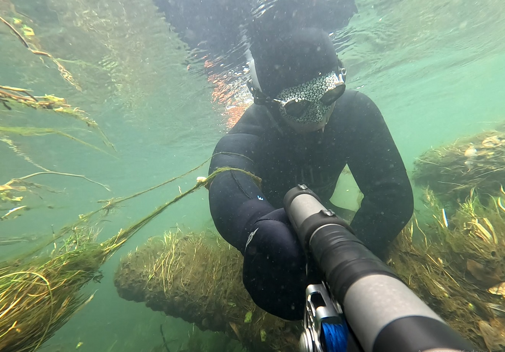
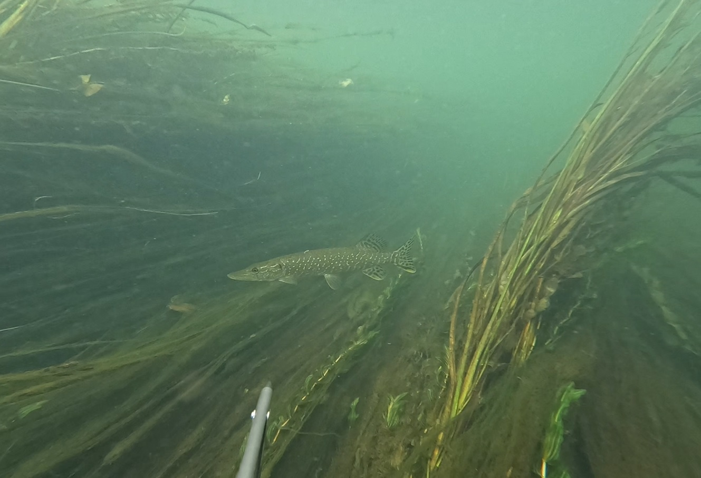
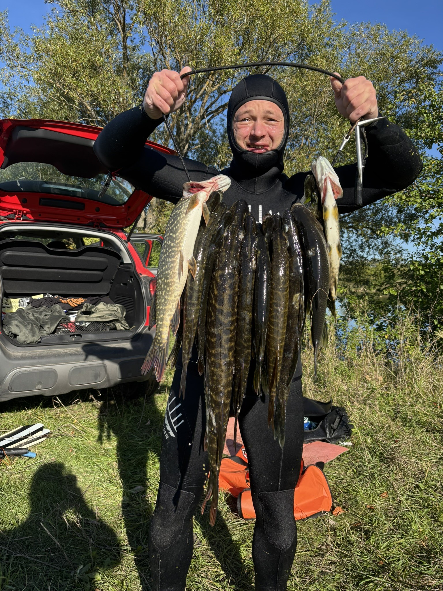

ABYSS
Река Пьяна


Экспедиционный сплав
Нижегородская область
Для двоих
Индивидуально
Река Пьяна — самая динамичная программа. Это извилистая река с глубокими участками и постоянной сменой локаций. Высокий элемент приключения сочетается с уникальной подводной растительностью. Формат «движения и поиска» позволяет охотиться даже без длительных погружений.
Характер тура
- динамичный и насыщенный
- постоянная смена локаций
- элемент приключения
- можно охотиться без погружений
Особенности
- уникальная подводная растительность
- для активных охотников
- для тех, кто любит движение и поиск
Программа тура
- Подготовительный день: подбор снаряжения, инструктаж, составление маршрута.
- День охоты: заброска на точку, 5–6 часов охоты с передвижением по реке, обед на природе, возвращение, приготовление улова.
Что входит
- трансфер до реки и обратно
- профессиональное снаряжение
- инструктор-проводник
- питание, горячий чай
- фото/видеосъёмка
Сезонность
Сезон: середина июня – конец сентября. Наилучшая прозрачность воды — в июле–августе.


Для этого тура доступны пакеты BASE и EXECUTIVE (см. описание на главной странице).